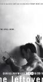

The Leftovers
Stephen Klancher
...has seen 1
...has seen 0 hours
...has not seen 0.5 hours

Timeline
Most Recent:
Pilot
First Unseen:
Penguin One, Us Zero (# 2)
...has seen 1
...has seen 0 hours
...has not seen 0.5 hours
Timeline
Most Recent:
Pilot
First Unseen:
Penguin One, Us Zero (# 2)


The Most Powerful Man in the World (and His Identical Twin Brother) Airs on 2017-05-28
S3 - E7 of The Leftovers
S3 - E7 of The Leftovers